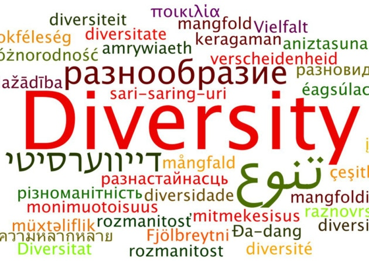

One of the most influential ideas in the study of languages is that of universal grammar (UG). Put forward by Noam Chomsky in the 1960s, it is widely interpreted as meaning that all languages are basically the same, and that the human brain is born language-ready, with an in-built programme that is able to interpret the common rules underlying any mother tongue. For five decades this idea prevailed, and influenced work in linguistics, psychology and cognitive science. To understand language, it implied, you must sweep aside the huge diversity of languages, and find their common human core.
Since the theory of UG was proposed, linguists have identified many universal language rules. However, there are almost always exceptions. It was once believed, for example, that if a language had syllables[1] that begin with a vowel and end with a consonant (VC), it would also have syllables that begin with a consonant and end with a vowel (CV). This universal lasted until 1999, when linguists showed that Arrernte, spoken by Indigenous Australians from the area around Alice Springs in the Northern Territory, has VC syllables but no CV syllables.
Other non-universal universals describe the basic rules of putting words together. Take the rule that every language contains four basic word classes: nouns, verbs, adjectives and adverbs. Work in the past two decades has shown that several languages lack an open adverb class, which means that new adverbs cannot be readily formed, unlike in English where you can turn any adjective into an adverb, for example ‘soft’ into ‘softly’. Others, such as Lao, spoken in Laos, have no adjectives at all. More controversially, some linguists argue that a few languages, such as Straits Salish, spoken by indigenous people from north-western regions of North America, do not even have distinct nouns or verbs. Instead, they have a single class of words to include events, objects and qualities.
Even apparently indisputable universals have been found lacking. This includes recursion, or the ability to infinitely place one grammatical unit inside a similar unit, such as ‘Jack thinks that Mary thinks that ... the bus will be on time’. It is widely considered to be the most essential characteristic of human language, one that sets it apart from the communications of all other animals. Yet Dan Everett at Illinois State University recently published controversial work showing that Amazonian Piraha does not have this quality.
But what if the very diversity of languages is the key to understanding human communication? Linguists Nicholas Evans of the Australian National University in Canberra, and Stephen Levinson of the Max Planck Institute for Psycholinguistics in Nijmegen, the Netherlands, believe that languages do not share a common set of rules. Instead, they say, their sheer variety is a defining feature of human communication - something not seen in other animals. While there is no doubt that human thinking influences the form that language takes, if Evans and Levinson are correct, language in turn shapes our brains. This suggests that humans are more diverse than we thought, with our brains having differences depending on the language environment in which we grew up. And that leads to a disturbing conclusion: every time a language becomes extinct, humanity loses an important piece of diversity.
If languages do not obey a single set of shared rules, then how are they created? ‘Instead of universals. you get standard engineering solutions that languages adopt again and again, and then you get outliers.' says Evans. He and Levinson argue that this is because any given language is a complex system shaped by many factors, including culture, genetics and history. There- are no absolutely universal traits of language, they say, only tendencies. And it is a mix of strong and weak tendencies that characterises the ‘bio-cultural’ mix that we call language.
According to the two linguists, the strong tendencies explain why many languages display common patterns. A variety of factors tend to push language in a similar direction, such as the structure of the brain, the biology of speech, and the efficiencies of communication. Widely shared linguistic elements may also be ones that build on a particularly human kind of reasoning. For example, the fact that before we learn to speak we perceive the world as a place full of things causing actions (agents) and things having actions done to them (patients) explains why most languages deploy these grammatical categories.
Weak tendencies, in contrast, are explained by the idiosyncrasies of different languages. Evans and Levinson argue that many aspects of the particular natural history of a population may affect its language. For instance, Andy Butcher at Flinders University in Adelaide, South Australia, has observed that indigenous Australian children have by far the highest incidence of chronic middle-ear infection of any population on the planet, and that most indigenous Australian languages lack many sounds that are common in other languages, but which are hard to hear with a middle-ear infection. Whether this condition has shaped the sound systems of these languages is unknown, says Evans, but it is important to consider the idea.
Levinson and Evans are not the first to question the theory of universal grammar, but no one has summarised these ideas quite as persuasively, and given them as much reach. As a result, their arguments have generated widespread enthusiasm, particularly among those linguists who are tired of trying to squeeze their findings into the straitjacket of ‘absolute universals’. To some, it is the final nail in UG’s coffin. Michael Tomasello, co-director of the Max Planck Institute for Evolutionary Anthropology in Leipzig, Germany, has been a long-standing critic of the idea that all languages conform to a set of rules. ‘Universal grammar is dead,’ he says.
[1] a unit of sound